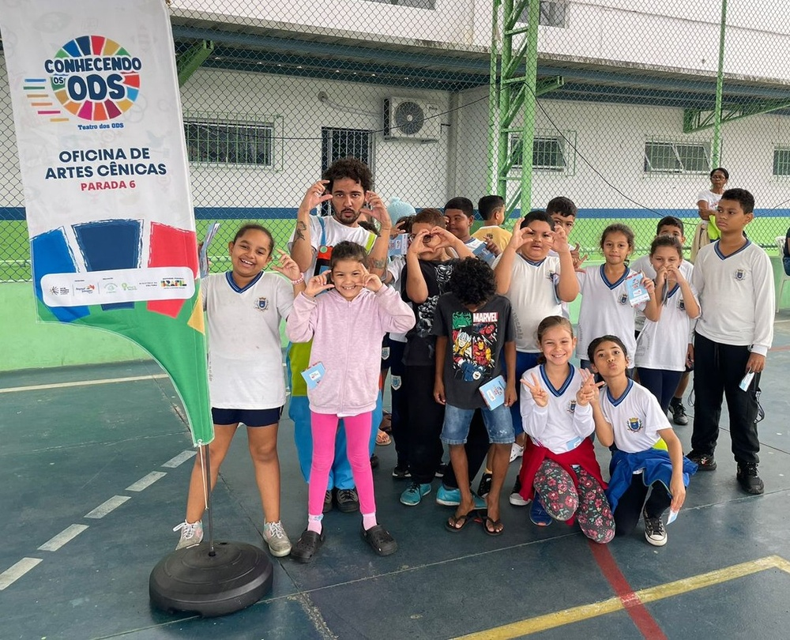
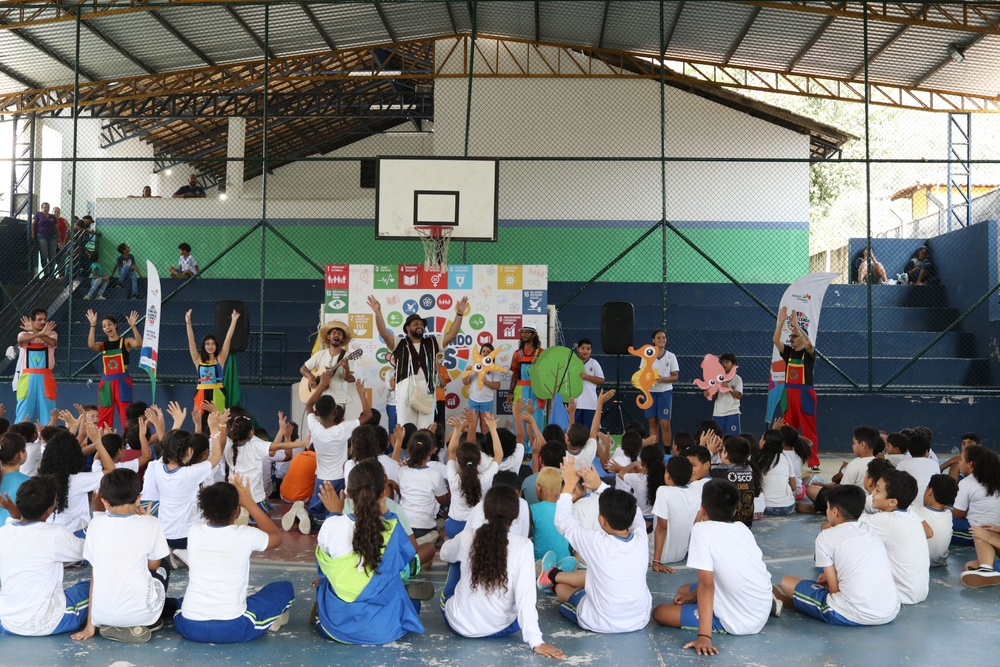

"Ideias sustentáveis que ganham vida e inspiram transformações.”
O projeto Teatro dos ODS é uma iniciativa que integra o poder transformador das artes cênicas com a conscientização sobre os Objetivos de Desenvolvimento Sustentável (ODS). Através de oficinas de teatro, cada turma desenvolveu e encenou uma peça que explora um dos ODS, oferecendo uma experiência educativa e inspiradora tanto para os alunos quanto para a comunidade.
Como parte do projeto, uma palestra intitulada "Como a arte pode ser ensinada nas escolas” foi oferecida para os professores de escolas públicas, ampliando o alcance do impacto e incentivando novas formas de aprendizado.
"Ideias sustentáveis que ganham vida e inspiram transformações.”


O projeto Teatro dos ODS é uma iniciativa que integra o poder transformador das artes cênicas com a conscientização sobre os Objetivos de Desenvolvimento Sustentável (ODS). Através de oficinas de teatro, cada turma desenvolveu e encenou uma peça que explora um dos ODS, oferecendo uma experiência educativa e inspiradora tanto para os alunos quanto para a comunidade.
Como parte do projeto, uma palestra intitulada "Como a arte pode ser ensinada nas escolas” foi oferecida para os professores de escolas públicas, ampliando o alcance do impacto e incentivando novas formas de aprendizado.

A oficina de artes cênicas foi uma atividade voltada para crianças e jovens, com foco na expressão, criatividade e trabalho em equipe, onde os participantes exploraram técnicas como jogos, improvisação, expressão corporal, interpretação e construção de personagens. Orientados por profissionais especializados, desenvolveram habilidades sociais e emocionais enquanto colaboraram na criação de cenas e apresentações teatrais.
No final das oficinas de teatro, os alunos apresentaram sua peça sobre os ODS para a comunidade escolar. O objetivo foi o desenvolvimento do trabalho em grupo, direção, logística, organização, produção de figurino e cenário, criação artística, criatividade e outras habilidades importantes na produção de uma peça teatral e conscientizar e engajar as pessoas sobre a importância dos ODS e inspirá-las a agir para promover mudanças positivas em suas próprias vidas e comunidades.

36 fotos do projeto


